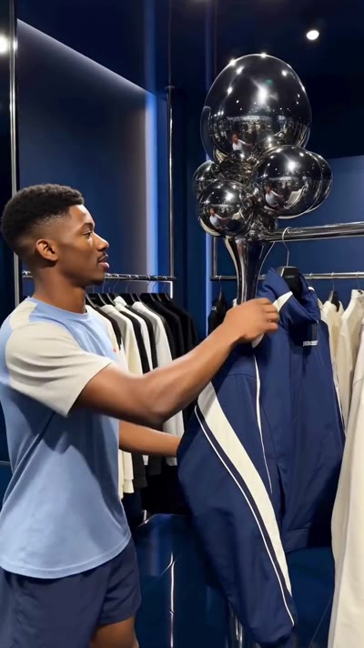

服务谁
优先服务有持续上新、促销或内容更新需求，但缺少完整视频制作团队的品牌商家与跨境团队。
面向品牌商家与产品团队的
AI 营销内容创作平台。

上传产品图片或链接，由 AI 提炼卖点、组织创意，生成推广视频和图片，服务上新、促销与多版本创意测试。
优先服务有持续上新、促销或内容更新需求，但缺少完整视频制作团队的品牌商家与跨境团队。
上新、促销与创意测试反复需要素材。将卖点分析、创意组织与内容生成整合为简单流程，减少重复准备与制作门槛。
以自助订阅与用量加购为主，企业年度合作为补充；不以扩大人工交付规模作为主要增长路径。
已具备产品资料输入、模板与人物选择、视频及图片生成、历史素材自动保存的核心流程，并有多品类成片案例。
未来 18 个月：深化可用产品、验证高频需求，建立可重复获客与持续续费的自助订阅业务。
商品上新、换季促销、App 版本和 AI 功能发布都有时间窗口。拍摄、人物协调、剪辑与多轮修改拉长了准备周期，产品已经上线，素材却还没有到位。
同一个产品需要尝试不同人群、开头与表达方式。按条拍摄、反复外包的成本，限制了可测试的方向和数量。
平台、语言、活动和卖点发生变化，内容就要更新。反复找素材、交代品牌要求和协调修改，占用营销团队的时间。
卖点可以交给 AI 分析，但产品外观、镜头、配音和品牌表达仍需在成片中协调一致。分散的工具和反复尝试，让用户继续承担制作成本。
VIRAL 聚焦从产品资料到可用成片的完整任务，让有限的时间与预算支持更多创意尝试。
Shopify 服务全球 175 个以上国家的数百万商家。Amazon 披露，2025 年超过 7.5 万个独立卖家在其平台的年销售额突破 100 万美元。Shopify ↗、Amazon ↗
AppsFlyer 估计，2025 年生成式 AI App 的获客广告支出达到约 8.24 亿美元，同比增长约 50%。产品演示、功能介绍与使用场景，是值得覆盖的内容需求。AppsFlyer ↗
Wistia 2026 年报告指出，视频需求上升，但近一半受访团队保持预算不变。Wistia ↗
VIRAL 争取的是内容制作、创意工具和部分标准化外包预算，从具有持续需求与明确预算的客户群体开始扩展。
注：平台商家数量与广告支出用于说明需求背景，不等同于 VIRAL 的付费客户数或软件市场规模。
| 客户群体 | 核心需求 | 典型使用场景 |
|---|---|---|
| 品牌商家与跨境卖家 | 为不同商品和推广节点快速准备素材 | 商品上新、促销、社媒种草、详情页展示 |
| App 开发者与增长团队 | 解释功能、展示价值并吸引使用 | 下载推广、版本发布、功能演示 |
| AI 产品公司与独立开发者 | 将抽象能力转化为可理解的使用场景 | 产品发布、能力展示、使用教学 |
| 个人投手与小型营销团队 | 持续尝试不同开头与创意表达 | 广告变体、参考改编、多版本测试 |
先做深商品内容。 当前作品覆盖服装、鞋包、消费电子、日用品及器械等品类，优先服务有连续上新、促销和内容更新需求的客户。
再拓展数字产品场景。 深化 App 与 AI 产品专用模板，围绕真实界面、录屏与功能价值组织推广表达。
初期聚焦英语市场及中国出海客户，后续根据需求拓展日语等本地化市场。
历史上传与生成的素材自动保存，随时调用，无需手动保存或重复上传。
| 产品层次 | 核心模块 | 作用 |
|---|---|---|
| 主要创作入口 | Marketing Studio | 围绕内容类型与模板制作营销视频和图片 |
| 创意扩展 | Recast Studio、Hooks Studio | 参考创意改编与不同开头，支持多轮表达尝试 |
| 品牌与素材管理 | Brand Space、Assets | 沉淀品牌资料与创作资产，减少重复准备 |
人物能力按内容需要嵌入流程，服务具体推广任务。
目前已形成产品图片或链接输入、模板与人物选择、视频及图片生成、历史素材自动保存的核心流程。
结合生活化场景、产品近景与佩戴动作，呈现人物推荐型内容。适用于消费电子介绍与社媒种草。
通过外套上身、拉链细节和穿着动作展示商品。适用于服装上新、穿搭展示与商品短视频。
结合产品讲解与操作动作，在居家场景中展示设备外观和使用方式。适用于产品介绍与使用场景内容。
以上为产品生成示例，展示内容形式与画面表现，不代表客户投放效果。
Higgsfield 已提供围绕商品或 App 链接生成推广内容的流程；Arcads 将产品研究、脚本与广告视频制作整合到同一工作流。AI 分析卖点和生成视频，已是同类产品覆盖的能力。Higgsfield ↗、Arcads ↗
VIRAL 围绕缺少专业制作能力的商家和产品团队，重点建立三项产品优势：
Marketing Studio 将商品展示、人物讲解等经验沉淀为模板，让用户围绕推广用途开始创作，减少摸索制作方法的时间。
用户提供产品资料，AI 提炼卖点、组织脚本与画面。交互围绕素材、用途和必要选择展开，降低提示词与制作经验门槛。
Recast Studio 与 Hooks Studio 扩展创意表达，Brand Space 与 Assets 保留品牌背景和历史素材，减少下一轮推广的准备成本。
产品迭代以可用成片的获取效率和重复创作体验为中心。
围绕不同品类与内容类型，将有效的创意结构、制作方法和生成处理沉淀为模板与流程，持续改善成片质量和稳定性。
Brand Space 管理品牌与产品资料，Assets 自动保存上传与生成内容。随着使用增加，用户可以更方便地调用已有资产，完成后续创作。
围绕产品一致性、成片可用性、修改和复用情况完善评价与流程，逐步形成适配商业场景的质量经验。
未来在客户授权和数据条件具备时，进一步关联创意与投放反馈，支持内容选择与优化。
VIRAL 的长期优势来自流程经验、客户资产与反馈的累积，而非单一模型或某条提示词。
提供月付与年付方案，通过生成额度与使用规模分档，服务个人经营者、独立开发者和营销人员。
满足上新、促销、发布和集中创意测试时增加的生成需求；结合模型成本与使用规模设计高用量方案。
为需要固定频次内容的企业提供年度方案，按数量、规格、修改次数和交付节奏报价。
方案示例：年度签约，每月交付 60 条约定规格的视频；超出约定范围的需求另行报价。
自助订阅承担主要增长，企业合作控制服务范围、单独核算成本与收益。可标准化的共性需求持续进入产品流程。
通过 KOL 合作、Instagram 等社媒内容、SEO，以及 Google、Meta 广告，展示具体品类与推广场景的成片和操作过程。
将案例、模板、落地页与试用任务对应起来，优化体验额度与引导，帮助用户用自己的产品获得第一条可用内容。
围绕上新、促销、版本发布和广告变体提供模板与创作入口，让已有品牌资料和素材继续服务后续推广。
按客户类型与渠道观察付费、续费、生成成本及获客回收，逐步扩大表现更好的路径。
企业合作通过案例展示、转介绍和定向沟通获取，不以扩大人工交付规模作为软件增长的主要路径。
| 阶段 | 工作重点 | 有效付费账户目标 | 月订阅收入目标 |
|---|---|---|---|
| 前 6 个月 | 优化五个核心模块、首次体验与试用；深化商品模板，扩展 App 场景；验证有效渠道 | 250–350 个 | 1.25–1.75 万美元 |
| 第 12 个月 | 扩大有效渠道，提升重复使用与续费，完善成本控制 | 约 1,500 个 | 约 7.5 万美元 |
| 第 18 个月 | 在留存、获客回收及资金条件允许时，扩大已验证路径 | 约 3,000 个 | 约 15 万美元 |
产品重点：提升成片可用性、减少人工操作、改善素材复用，持续拓展高频推广场景。
增长重点：找到持续需求更强的客户，建立可重复获客、可持续续费的自助订阅业务。
注：时间从本轮资金到账、计划启动起计算。以上为规划目标，按平均每个有效付费账户每月 50 美元测算；年付按月折算，不含一次性加购及企业内容服务收入。
资金用于未来 18 个月的产品深化、市场拓展与业务运营，并保留安全储备。
| 资金用途 | 规划金额（万元） | 重点方向 |
|---|---|---|
| 产品与研发 | 600 | 核心产品、生成流程、设计与质量测试 |
| 市场与渠道增长 | 450 | KOL、广告、SEO、内容与增长实验 |
| 模型及云服务 | 300 | 生成、试用、评测、存储与基础设施 |
| 日常运营与客户支持 | 90 | 基础支持、运营协作及企业合作试点 |
| 品牌及基础准备 | 50 | 品牌与必要服务准备 |
| 安全储备 | 310 | 应对成本波动及经营计划调整 |
| 合计 | 1,800 |
资金按阶段投入，结合付费续费、获客回收与实际生成成本调整节奏。
本轮重点：深化可用产品、验证高频需求、建立自助订阅的增长基础。